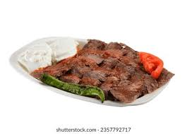
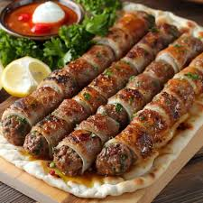
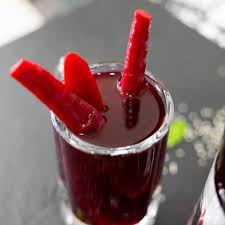
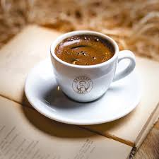

LEZZET SOFRASI
Anadolu'nun Seçkin Lezzetleri
Ana Yemekler

Zırh Adana
360 ₺Zırh kıyma ve özel baharatların ateşle dansı.

Bursa İskender
390 ₺Özel pide, döner eti, domates sosu ve kızgın tereyağı.

Tavuk Izgara
320 ₺Özel marinasyonlu, yumuşacık but ızgara.

Beyti Sarma
420 ₺Tereyağı, domates sosu ve yoğurdun muhteşem uyumu.

Taş Fırın Lahmacun
110 ₺Çıtır hamur, bol malzeme, taş fırın lezzeti.
İçecekler
Yayık AyranıBakır kupa ile
45 ₺

Şalgam SuyuAcılı/Acısız
40 ₺
Kutu İçeceklerPepsi, Yedigün
57 ₺
SuCam şişe
20 ₺

Türk KahvesiÇifte kavrulmuş
60 ₺
ÇayTaze demli
25 ₺